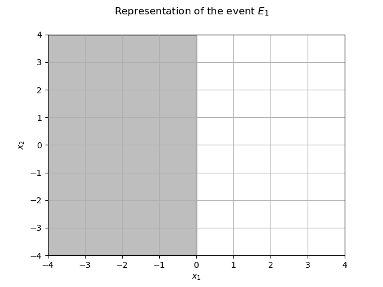
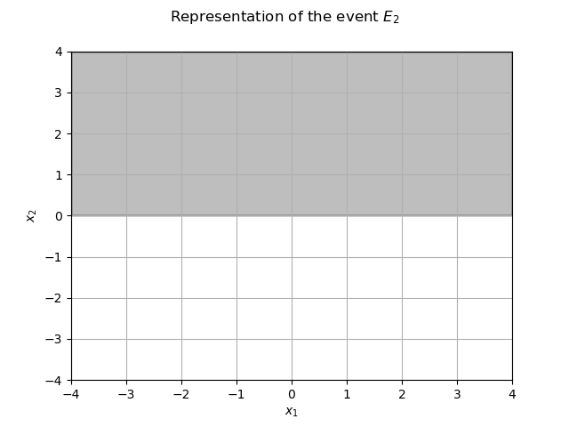
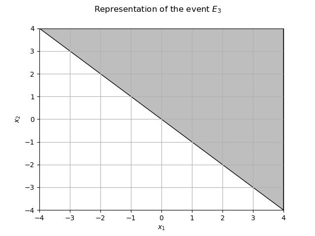
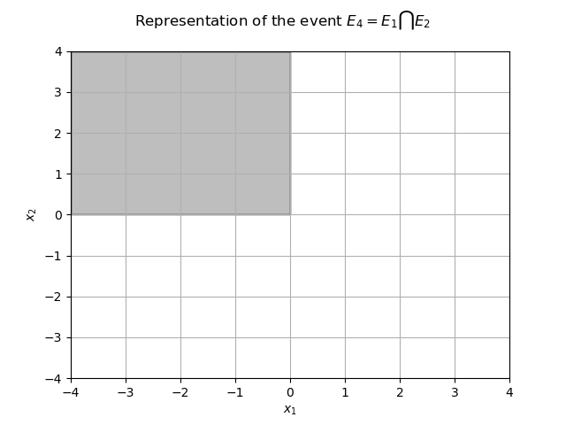
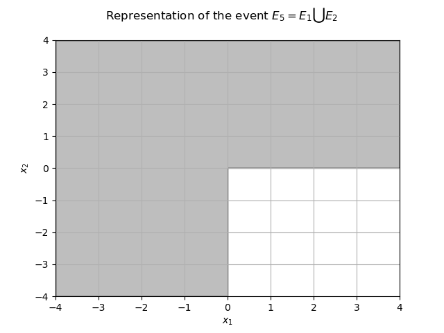
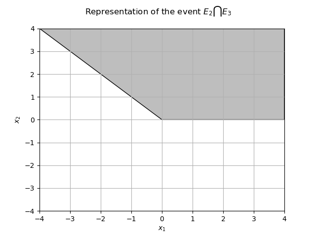

Note
Go to the end to download the full example code
Create unions or intersections of events¶
Abstract¶
This example illustrates system events, which are defined as unions or intersections of other events.
We will show how to estimate their probability both with Monte-Carlo sampling
(using the class ProbabilitySimulationAlgorithm)
and with a first order approximation (using the class SystemFORM).
import openturns as ot
import openturns.viewer as otv
from matplotlib import pylab as plt
ot.Log.Show(ot.Log.NONE)
Intersection
The event defined as the intersection of several events is realized when all sub-events occurs:

Union
The event defined as the union of several events is realized when at least one sub-event occurs:

We consider a bivariate standard Gaussian random vector X = (X_1, X_2).
dim = 2
distribution = ot.Normal(dim)
X = ot.RandomVector(distribution)
We want to estimate the probability given by
![P = \mathbb{E}[\mathbf{1}_{\mathrm{Event}}(X_1, X_2)].]()
We now build several events using intersections and unions.
We consider three functions f1, f2 and f3 :
f1 = ot.SymbolicFunction(["x0", "x1"], ["x0"])
f2 = ot.SymbolicFunction(["x0", "x1"], ["x1"])
f3 = ot.SymbolicFunction(["x0", "x1"], ["x0+x1"])
We build CompositeRandomVector from these functions and the initial distribution.
Y1 = ot.CompositeRandomVector(f1, X)
Y2 = ot.CompositeRandomVector(f2, X)
Y3 = ot.CompositeRandomVector(f3, X)
We define three basic events ![E_1=\{(x_0,x_1)~:~x_0 < 0 \}]() ,
, ![E_2=\{(x_0,x_1)~:~x_1 > 0 \}]() and
and ![E_3=\{(x_0,x_1)~:~x_0+x_1>0 \}]() .
.
e1 = ot.ThresholdEvent(Y1, ot.Less(), 0.0)
e2 = ot.ThresholdEvent(Y2, ot.Greater(), 0.0)
e3 = ot.ThresholdEvent(Y3, ot.Greater(), 0.0)
The restriction of the domain  to
to ![[-4,4] \times [-4, 4]]() is the grey area.
is the grey area.
myGraph = ot.Graph(r"Representation of the event $E_1$", r"$x_1$", r"$x_2$", True, "")
data = [[-4, -4], [0, -4], [0, 4], [-4, 4]]
myPolygon = ot.Polygon(data)
myPolygon.setColor("grey")
myPolygon.setEdgeColor("black")
myGraph.add(myPolygon)
view = otv.View(myGraph)
axes = view.getAxes()
_ = axes[0].set_xlim(-4.0, 4.0)
_ = axes[0].set_ylim(-4.0, 4.0)

The restriction of the domain  to is the grey area.
to is the grey area.
myGraph = ot.Graph(r"Representation of the event $E_2$", r"$x_1$", r"$x_2$", True, "")
data = [[-4, 0], [4, 0], [4, 4], [-4, 4]]
myPolygon = ot.Polygon(data)
myPolygon.setColor("grey")
myPolygon.setEdgeColor("black")
myGraph.add(myPolygon)
view = otv.View(myGraph)
axes = view.getAxes()
_ = axes[0].set_xlim(-4.0, 4.0)
_ = axes[0].set_ylim(-4.0, 4.0)

The restriction of the domain  to is the grey area.
to is the grey area.
myGraph = ot.Graph(r"Representation of the event $E_3$", r"$x_1$", r"$x_2$", True, "")
data = [[-4, 4], [4, -4], [4, 4]]
myPolygon = ot.Polygon(data)
myPolygon.setColor("grey")
myPolygon.setEdgeColor("black")
myGraph.add(myPolygon)
view = otv.View(myGraph)
axes = view.getAxes()
_ = axes[0].set_xlim(-4.0, 4.0)
_ = axes[0].set_ylim(-4.0, 4.0)

We can define the intersection  : that is the upper left quadrant.
: that is the upper left quadrant.
e4 = ot.IntersectionEvent([e1, e2])
The restriction of the domain  to is the grey area.
to is the grey area.
myGraph = ot.Graph(
r"Representation of the event $E_4 = E_1 \bigcap E_2$",
r"$x_1$",
r"$x_2$",
True,
"",
)
data = [[-4, 0], [0, 0], [0, 4], [-4, 4]]
myPolygon = ot.Polygon(data)
myPolygon.setColor("grey")
myPolygon.setEdgeColor("black")
myGraph.add(myPolygon)
view = otv.View(myGraph)
axes = view.getAxes()
_ = axes[0].set_xlim(-4.0, 4.0)
_ = axes[0].set_ylim(-4.0, 4.0)

The probability of that event is  . A basic estimator is:
. A basic estimator is:
print("Probability of e4 : %.4f" % e4.getSample(10000).computeMean()[0])
Probability of e4 : 0.2476
We define the union  . It is the whole plan without the lower right quadrant.
. It is the whole plan without the lower right quadrant.
e5 = ot.UnionEvent([e1, e2])
The restriction of the domain  to is the grey area.
to is the grey area.
myGraph = ot.Graph(
r"Representation of the event $E_5 = E_1 \bigcup E_2$",
r"$x_1$",
r"$x_2$",
True,
"",
)
data = [[-4, -4], [0, -4], [0, 0], [4, 0], [4, 4], [-4, 4]]
myPolygon = ot.Polygon(data)
myPolygon.setColor("grey")
myPolygon.setEdgeColor("black")
myGraph.add(myPolygon)
view = otv.View(myGraph)
axes = view.getAxes()
_ = axes[0].set_xlim(-4.0, 4.0)
_ = axes[0].set_ylim(-4.0, 4.0)

The probability of that event is  . A basic estimator is:
. A basic estimator is:
print("Probability of e5 : %.4f" % e5.getSample(10000).computeMean()[0])
Probability of e5 : 0.7476
It supports recursion. Let’s define  .
.
e6 = ot.UnionEvent([e1, ot.IntersectionEvent([e2, e3])])
First we draw the domain :
myGraph = ot.Graph(
r"Representation of the event $E_2 \bigcap E_3 $", r"$x_1$", r"$x_2$", True, ""
)
data = [[-4, 4], [0, 0], [4, 0], [4, 4]]
myPolygon = ot.Polygon(data)
myPolygon.setColor("grey")
myPolygon.setEdgeColor("black")
myGraph.add(myPolygon)
view = otv.View(myGraph)
axes = view.getAxes()
_ = axes[0].set_xlim(-4.0, 4.0)
_ = axes[0].set_ylim(-4.0, 4.0)

From the previous figures we easily deduce that the event
is the event and the probability is  . We can use a basic estimator and get :
. We can use a basic estimator and get :
print("Probability of e6 : %.4f" % e6.getSample(10000).computeMean()[0])
Probability of e6 : 0.7553
Usage with a Monte-Carlo algorithm¶
Of course, we can use simulation algorithms with this kind of events.
We set up a MonteCarloExperiment and a ProbabilitySimulationAlgorithm on the event  .
.
experiment = ot.MonteCarloExperiment()
algo = ot.ProbabilitySimulationAlgorithm(e6, experiment)
algo.setMaximumOuterSampling(2500)
algo.setBlockSize(4)
algo.setMaximumCoefficientOfVariation(-1.0)
algo.run()
We retrieve the results and display the approximate probability and a confidence interval :
result = algo.getResult()
prb = result.getProbabilityEstimate()
print("Probability of e6 through MC : %.4f" % prb)
cl = result.getConfidenceLength()
print("Confidence interval MC : [%.4f, %.4f]" % (prb - 0.5 * cl, prb + 0.5 * cl))
Probability of e6 through MC : 0.7615
Confidence interval MC : [0.7522, 0.7708]
Usage with SystemFORM¶
The SystemFORM class implements an approximation method suitable for system events.
The event must be in its disjunctive normal form (union of intersections, or a single intersection).
For system events, we always have to use the same root cause (input distribution). Here we use input variables with a normal distribution specified by its mean, standard deviation and correlation matrix.
dim = 5
mean = [200.0] * dim
mean[-1] = 60
mean[-2] = 60
sigma = [30.0] * dim
sigma[-1] = 15.0
R = ot.CorrelationMatrix(dim)
for i in range(dim):
for j in range(i):
R[i, j] = 0.5
dist = ot.Normal(mean, sigma, R)
As usual we create a RandomVector out of the input distribution.
X = ot.RandomVector(dist)
We define the leaf events thanks to SymbolicFunction.
inputs = ["M1", "M2", "M3", "M4", "M5"]
e0 = ot.ThresholdEvent(
ot.CompositeRandomVector(ot.SymbolicFunction(inputs, ["M1-M2+M4"]), X),
ot.Less(),
0.0,
)
e1 = ot.ThresholdEvent(
ot.CompositeRandomVector(ot.SymbolicFunction(inputs, ["M2+2*M3-M4"]), X),
ot.Less(),
0.0,
)
e2 = ot.ThresholdEvent(
ot.CompositeRandomVector(ot.SymbolicFunction(inputs, ["2*M3-2*M4-M5"]), X),
ot.Less(),
0.0,
)
e3 = ot.ThresholdEvent(
ot.CompositeRandomVector(ot.SymbolicFunction(inputs, ["-(M1+M2+M4+M5-5*10.0)"]), X),
ot.Less(),
0.0,
)
e4 = ot.ThresholdEvent(
ot.CompositeRandomVector(ot.SymbolicFunction(inputs, ["-(M2+2*M3+M4-5*40.0)"]), X),
ot.Less(),
0.0,
)
We consider a system event in disjunctive normal form (union of intersections):
event = ot.UnionEvent(
[ot.IntersectionEvent([e0, e3, e4]), ot.IntersectionEvent([e2, e3, e4])]
)
We can estimate the probability of the event with basic sampling.
print("Probability of the event : %.4f" % event.getSample(10000).computeMean()[0])
Probability of the event : 0.0826
We can also run a systemFORM algorithm to estimate the probability differently.
We first set up a solver to find the design point.
solver = ot.AbdoRackwitz()
solver.setMaximumIterationNumber(1000)
solver.setMaximumAbsoluteError(1.0e-3)
solver.setMaximumRelativeError(1.0e-3)
solver.setMaximumResidualError(1.0e-3)
solver.setMaximumConstraintError(1.0e-3)
We build the SystemFORM algorithm from the solver, the event and a starting point (here the mean) and then run the algorithm.
algo = ot.SystemFORM(solver, event, mean)
algo.run()
We store the result and display the probability.
result = algo.getResult()
prbSystemFORM = result.getEventProbability()
print("Probability of the event (SystemFORM) : %.4f" % prbSystemFORM)
Probability of the event (SystemFORM) : 0.0788
Display all figures
plt.show()